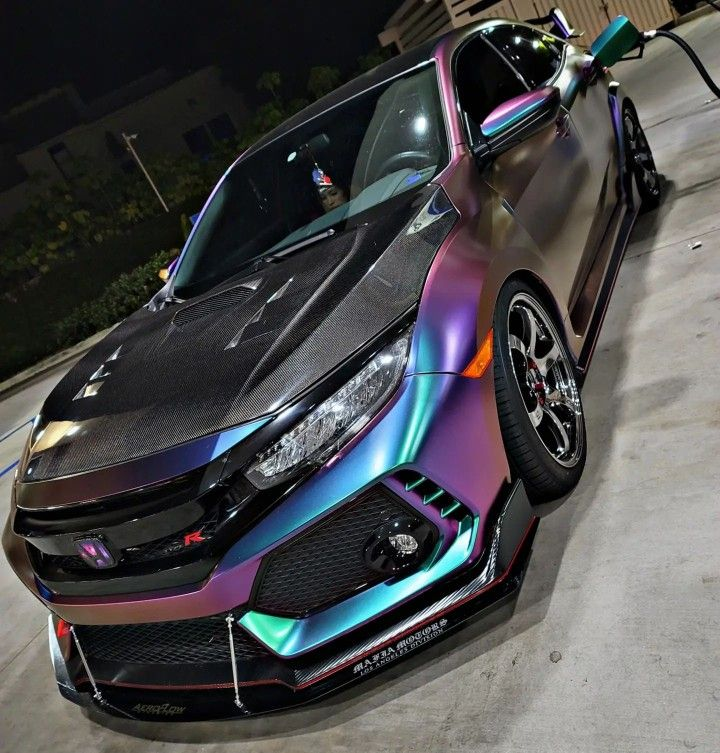

Jordan Guzmán
Jordan Guzmán
One career I am interested in is being an automechanic. They work and fix cars, and sometimes modify them for the customer. They are hardworking, and knowledgeable on cars and tools. The median annual pay is 46.9K, but can be as low as 29K to as high as 73K. To be a qualified mechanic you need High School education and train in a post-secondary education program. I would love to work on and modify cars because its cool to transform something to be better.

Harvard is one of the most well known Universities ever. It is very hard to get into, and offers great classes. It looks very good on a resume too. If you (your family) make 85k-150k they require anywhere from 0 to 10% of income, and the price increases the more you make. Because I want to attend Harvard, I am going to aim for a 1580 SAT or 35 ACT to have a good chance to getting accepted. Harvard is in a good location, with good places around, and good resources offered by the University.
Yale, while not as known as Harvard, is almost just as prestegious of a school. It has great classes, great location, and great resources in the school. Tuition is $37,034. Book and supplies expenses are estimated at $876 - $2190. Estimated living expenses are $23,208. To have a good chance of getting in, I'm going to aim for a 1580 SAT and 4.14 GPA.